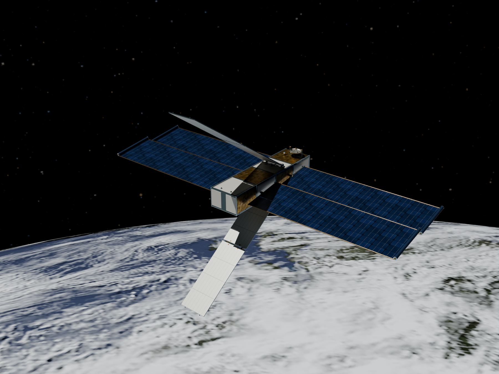

ORBITAL DATA CENTER
ORBITAL DATA CENTERExplore the feasibility
of orbital data centers.
A space mission design wizard
for exploring the concept.
Mission designCoupled analysisLearning tool

ORBITAL DATA CENTERA space mission design wizard
for exploring the concept.